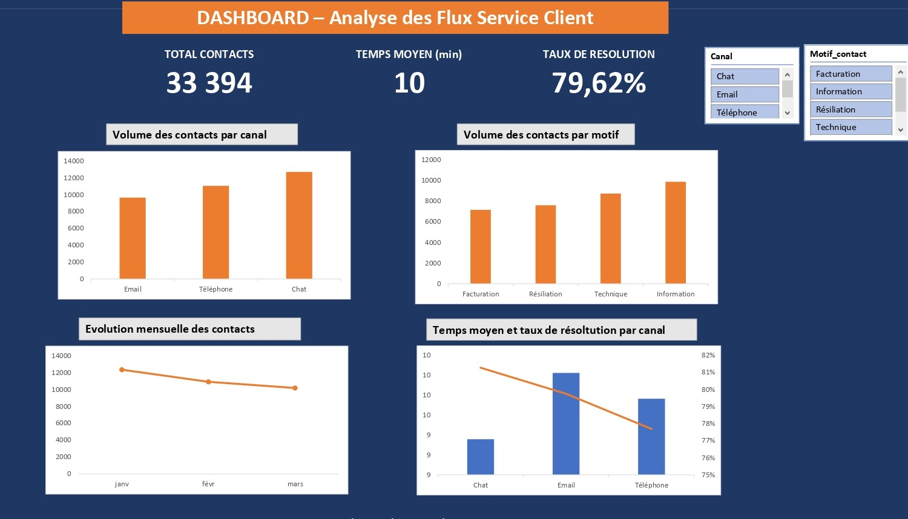
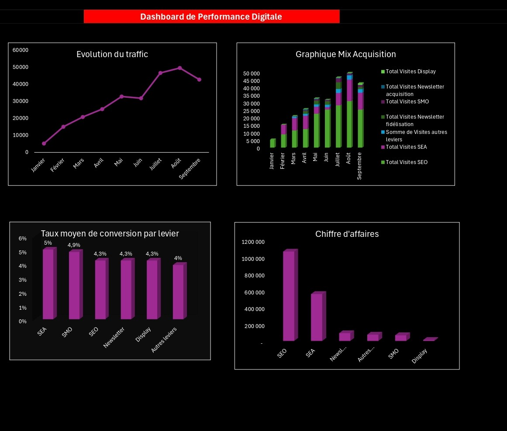

Landryne
HOUEHOU
Data Analyst Junior
À Propos
Étudiante en MSc Data Analytics, je développe mes compétences en analyse de données afin d’aider les entreprises à mieux comprendre leurs performances et optimiser leurs décisions. À l'aise avec Excel avancé et Tableau, j'ai développé des dashboards de suivi de KPI et analysé des bases de données volumineuses afin d'identifier les leviers d'optimisation. Je souhaite mettre mes compétences analytiques et ma compréhension des enjeux business au service d'une équipe orientée décision.
Projets

Data-Storytelling · Tableau
Analyse de performance commerciale — Superstore USA
- Fouille de données sur des transactions (2019–2022)
- Analyse de la rentabilité géographique par région et par état
- Segmentation des sous-catégories et identification des plus rentables
- Analyse churn et comportement d'achat des clients clés
- Test d'hypothèses sur l'impact du discount sur la marge du produit Canon
- Synthèse des insights avec recommandations business actionnables

Dashboard Excel · Données simulées
Analyse des flux service client
- Analyse de 33 394 contacts sur 3 mois (données générées via Mockaroo)
- Suivi des KPI clés : taux de résolution (79,62%), temps moyen de traitement (10 min)
- Répartition des contacts par canal (Chat, Email, Téléphone) et par motif
- Évolution mensuelle des volumes et analyse comparative par canal

Dashboard Excel · Projet académique
Analyse performance digitale
- Analyse de la performance digitale sur 9 mois (données fictives)
- Suivi de l'évolution du trafic et du mix acquisition par levier (SEO, SEA, SMO, Newsletter, Display)
- Analyse des taux de conversion par canal — SEA et SMO en tête (5% et 4,9%)
- Visualisation du chiffre d'affaires par levier — le SEO génère le CA le plus élevé
Compétences
Analyse & Pilotage
Outils Data
Outils métier
Formation
2025 – 2027 · En cours
MSc Data Analytics & Manager Marketing
INSEEC MSc, Marseille
Data Analytics, Statistiques, Programmation, Data-Driven Marketing, Management de projet
2020 – 2023 · Mention Bien
Licence Management & Économie du Numérique
ESMT, Dakar
Soft skills
Langues
Centres d'intérêt